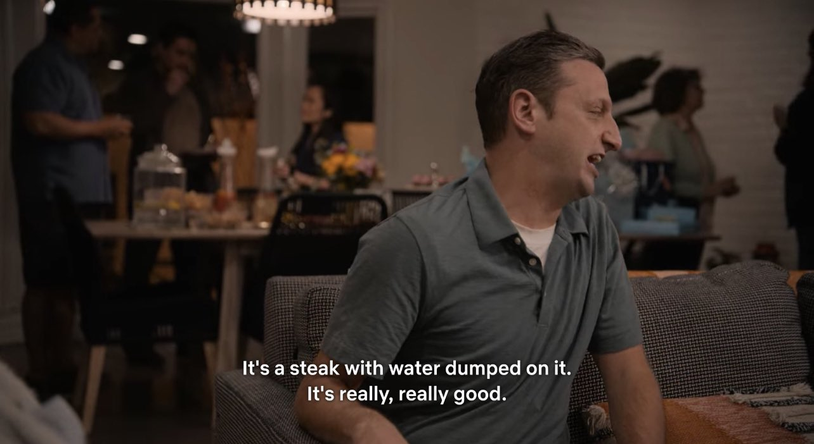

Sloppy Steaks

Description:
Just a big ol' cut of juicy red meat with water dumped all over it.
They can't stop you from ordering a steak and a glass of water!
Ingredients:
- Juicy red meat, 1 lb
- Salt
- Pepper
- 1 cup water, iced
Steps:
- Dry meat with paper towel
- Season both sides with salt and pepper
- Cook on 400 degree griddle 3-4 minutes per side, until medium rare
- Let rest for 5 min
- Serve on plate with nothing else, no garnish
- Add iced water to glass
- SLOP 'EM UP!!